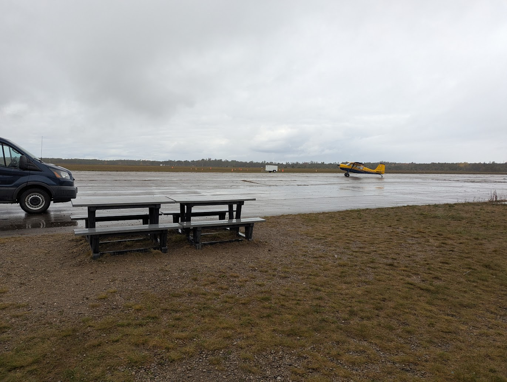
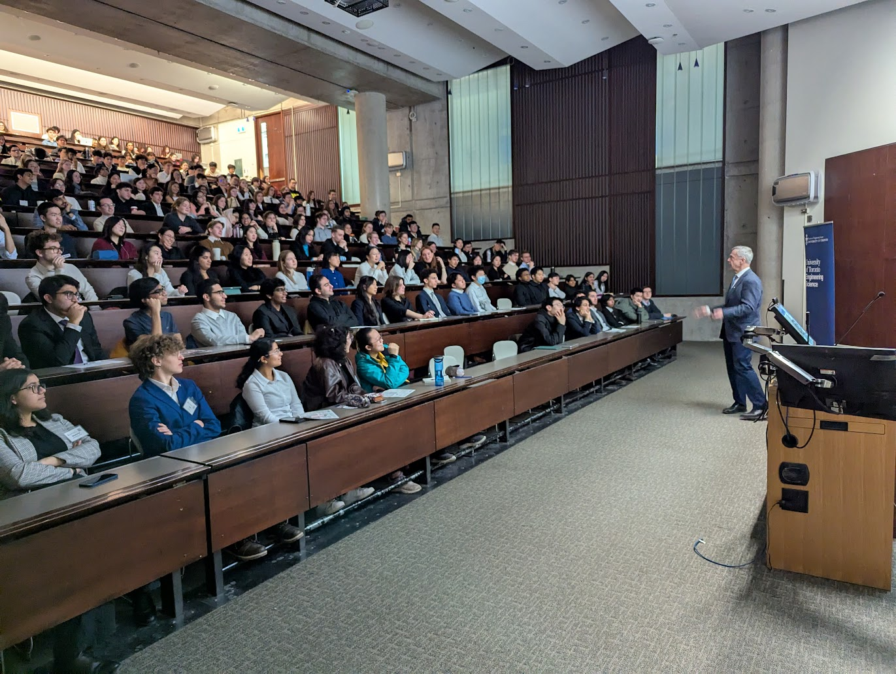

Experience
Flying
My most recent employment is as a Civilian Instructor with the Royal Canadian Air Cadets , where I work as a familiarization pilot, taking youth up for short but memorable glider flights.
I also volunteer as a ground school instructor, where I teach the academic portion of flight training. I am also a certified ROC-A examiner .

Volunteering
In addition to my experience as a volunteer ground school instructor and tutor, I have also been an active volunteer in the division of Engineering Science.
I have volunteered at events such as the Ontario University Fair and the on-campus Welcome to Engineering Day. I have also been a technical volunteer at ESEC, an in school conference where speakers such as Robert Thirsk come talk to engineering students.

Certifications
I have collected a few useful certifications here and there. These include, but are not limited to, French language proficiency (DELF B2) , Standard First Aid with CPR-C, and laser safety training at U of T.
Contests
Section to be filled soon! (I did write half the Putnam (I had another exam that morning) in 2024 and got a score that was 1 point above the median (which was like 2), but that's about it)